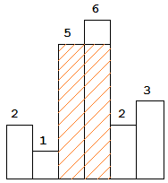

Problem
Given n non-negative integers representing the histogram's bar height where the width of each bar is 1, find the area of largest rectangle in the histogram.
Example:
Input: [2,1,5,6,2,3]
Output: 10
 Above is a histogram where width of each bar is 1, given height = [2,1,5,6,2,3].
Above is a histogram where width of each bar is 1, given height = [2,1,5,6,2,3].
 The largest rectangle is shown in the shaded area, which has area = 10 unit.
Notes
Main idea is to caculate both left edge and right edge for every entry in the array
Two ways of solution.
Iterative
Generate two arrays left[] and right[] to keep the two edges of every entry.
- one loop to caculate left[].
- one loop to caculate right[].
- one loop to go through all the edges to caculate the square.
Stack
Create a stack to store the index of the entry.
- if current entry is smaller than the top, we find the right edge of the top entry. pop it out and caculate the the max square of the top entry
- if current entry is not smaller than the top, push it into stack
- go through the left entries in the stack. The lefts ones are all have the longest bar at the top.
Solution
Solution 1: iterative
class Solution:
def largestRectangleArea(self, heights):
if not heights:
return 0
n = len(heights)
res = 0
left = [ i for i in range(n) ]
right = [ i for i in range(n) ]
# caculate for the left edge
for i in range(n):
p = i
while p >= 0:
if heights[p] < heights[i]:
break
p -= 1
left[i] = p
# caculate for the right edge
for i in range(n):
p = i
while p < n:
if heights[p] < heights[i]:
break
p += 1
right[i] = p
for i in range(n):
res = max(res, heights[i] * (right[i] - left[i] - 1))
return res
print(Solution().largestRectangleArea([2, 1, 5, 6, 2, 3]))
Solution 2: stack
class Solution:
def largestRectangleArea(self, heights):
stack = []
n = len(heights)
res = 0
index = 0
while index < n:
if not stack or heights[stack[-1]] <= heights[index]:
stack.append(index)
index += 1
else:
top = stack.pop()
area = (heights[top] *
((index - stack[-1] - 1) if stack else index))
res = max(res, area)
while stack:
h = stack.pop()
res = max(
res,
heights[h] * ((index - stack[-1] - 1) if stack else index))
return res
print(Solution().largestRectangleArea([2, 1, 5, 6, 2, 3]))